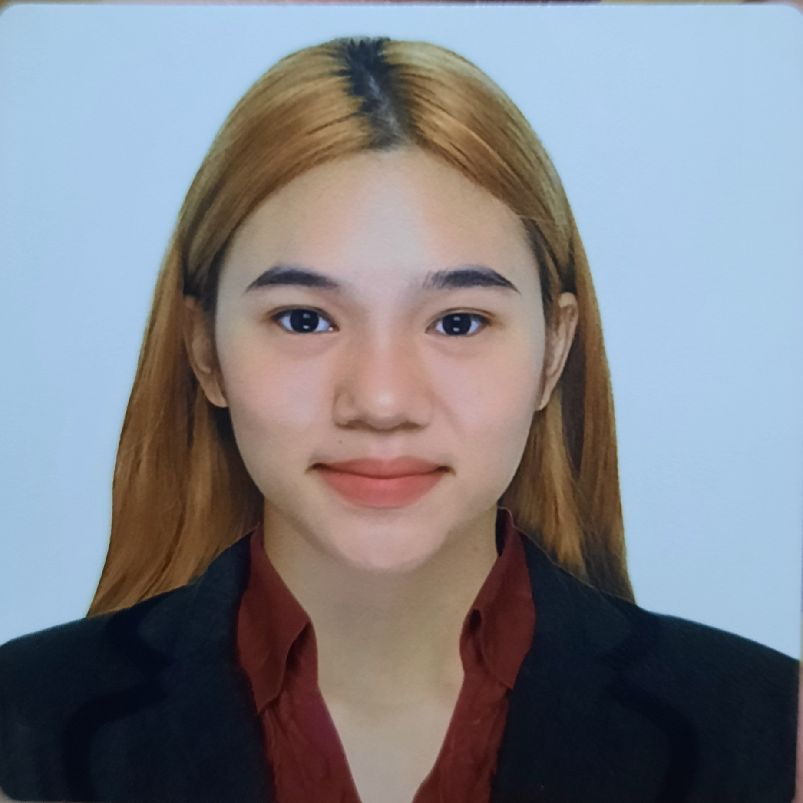

Christian Alexandra Rances
Field of Computer Science and Technologies
Basic Information
A second year Computer Science student at University of the East-Manila. With no working experience and focus-driven in studies and school works, Alexandra developed hard-working and time management skills that can be applied in working with the industry. Interested in Database Administrating and Web Developing. Capable of handling SQL databases and currently driven in mastering the course of Web designing. Ready to be creative, industrious, and interested in learning on the job from hard-working professionals.
Contact Information
- Address: Mirea Residences Pasig City 1610
- Email Address: xandra1293@gmail.com
- Contact Number: (+63)992-430-2405
Technical IT Skills
- Adept in Microsoft SQL database
- Literate in Python, C++, Java, and HTML programming languages
- Knowledgeable in UI and Web designing
- Cognizant in Statistics and Machine Learning
Educational Attainment
- August 2021 - Present
University of the East - Manila
Bachelor of Science Major in Computer Science
- August 2019 - March 2021
Santa Isabel College - Manila
Senior High School - STEM
- August 2015 - March 2019
Santa Isabel College - Manila
Junior High School
- August 2009 - March 2015
Santa Isabel College - Manila
Elementary
- August 2008 - March 2009
Santa Isabel College - Manila
Kindergarten
Skills, Training, Seminar Attended
- Webinar in Accenture Virtual Classroom Tech Talk
- Webinar in AWS Cloud Service
- Webinar in Cyber Security and Emerging Threats
Hobbies and Interests
- Solving puzzles
- Creating tables and data charts
- Cyber gaming
- Memorizing terminolgies and documenting papers
Go to Top